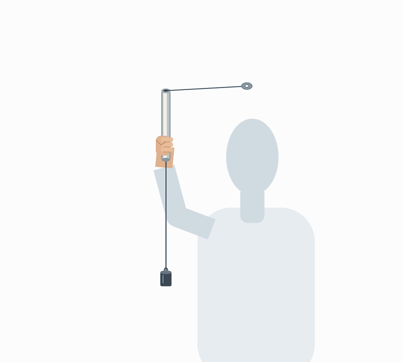

Work with your group through the steps in order.Measure with your group, but write this report on your own, in your own words. Go through the steps in order. Each step unlocks the next one. Your work is saved on this computer as you type, so a reload won't lose it. You send this report twice: your data in step 6, before the class discussion, and the finished report in step 8.
1
Your team
Who writes this report? Do what your teacher told you.
2
Predict before you swing
One of you will hold a tube above your head and swing a light mass around in a circle on a string. The string goes down through the tube to a heavy mass that hangs underneath. Before you try it, discuss with your group:
While the light mass goes around, you swing it faster. The heavy mass below will…
Another group hangs a heavier mass below, with the same light mass on top and the same radius. To keep everything steady, they must swing…
If the string broke while the light mass was going around, the light mass would fly…
Why do you think so? Write the reasons you agree on.
3
Your weights and the setup
- Decide the roles: the swinger holds the tube and keeps the speed constant, the timer uses the stopwatch and counts the laps, and the recorder types. In a pair, the timer also types.
- Find the mass of each weight: it may be written on it; if not, weigh it. The light one is m (it goes on top), the heavy one is M (it hangs below).
- Pass the string through the tube. Tie the light mass to the upper end and the heavy mass to the lower end. Pull hard on both knots to check them.

The light mass goes around; the heavy mass hangs still below the tube.
4
Measure: time the laps and the radius
- The swinger stands like in the animation: tube vertical, above the head, the light mass resting on the top of the tube and the heavy mass hanging below it.
- Make small circles with the hand until the light mass goes around in a circle above your head. Find a speed where the heavy mass stays at the same height below the tube, without moving up or down. That tells you the speed is constant.
- When it's steady, the timer says "go", counts 10 laps of the light mass and says "stop".
- At "stop", the swinger pinches the string right under the tube with the free hand, so the radius can't change, and stops swinging.
- Measure the radius r: hold the string straight out from the top of the tube and measure from the top edge of the tube to the center of the light mass.
- Do at least 3 trials, better 4 or 5, with different radii. In each one, keep the heavy mass at a different distance below the tube (for example about 5 cm, 15 cm, 25 cm, 35 cm). The closer it is to the tube, the bigger the circle.
How fast is the light mass going? In one lap it goes once around the circle, so the length of its path is the circumference of the circle, 2πr. It takes one period T to do it: the time for one lap, T = t/10 (the page works T out for you). With these two, work out the speed v of the light mass in each trial and type it in the table.
How do you calculate the speed v from the path length and the time?
v =
| # | Radius r (cm) | Time for 10 laps t (s) | Period T = t/10 (s) | Your speed v (m/s) |
|---|
💬 Stop and discuss
You used the same heavy mass in every trial. When the circle was bigger, was the light mass faster, slower or about as fast? Do the points fall on a straight line?
5
Think it through
The heavy mass hangs at rest while the light one goes around. How hard does the string pull on the light mass? Explain it with the forces on the heavy mass.
The light mass moves at constant speed, but it still needs a force to stay on the circle. Which way does that force point? What would happen without it?
Why did the heavy mass have to stay at the same height while you timed? What would it mean if it moved up?
Why do you time 10 laps instead of just one?
In step 2 you predicted that swinging faster would make the heavy mass …. What did you see when you tried it?
6
Send your data
Send your data now, before the class discussion. Your teacher puts the numbers of every group together, and the whole class looks for the rule. After that you finish the report in step 7 and send it again.
7
After the class discussion
Do this step after your teacher shows the results of the whole class.
Write the relation the class found for the force F that keeps a mass m going around a circle of radius r at speed v.
F =
Check it with one of your own trials. Choose a trial and calculate F with the class formula (m in kg, v in m/s, r in m).
Compare your result with the weight of your heavy mass, M·g = …. How close is it? What could explain the difference?
Which sources of error affected your measurements most? Discuss and choose.
Conclusion: what force kept the light mass going around? Where did it come from, and how does it depend on the mass, the speed and the radius? Use your numbers and the class results as evidence.
How did you share the work?How did your group share the work, and what did you do yourself? (Who swung, who timed, who measured the radius, who wrote…)
8